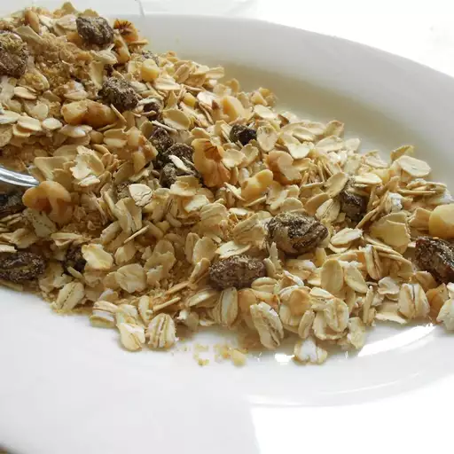

Muesli

This muesli recipe is a nutritious and delicious breakfast cereal.
Use any dried fruit you desire.
You can also use almonds in place of walnuts if you like.
It's wonderful served in bowls with milk and fresh berries or sliced fresh fruit.
Ingredients
- 4 ½ cups rolled oats
- 1 cup raisins
- ½ cup toasted wheat germ
- ½ cup wheat bran
- ½ cup oat bran
- ½ cup chopped walnuts
- ¼ cup packed brown sugar
- ¼ cup raw sunflower seeds
Steps
- Combine oats, raisins, wheat germ, wheat bran, oat bran, walnuts, brown sugar, and sunflower seeds in a large bowl.
- Mix well.
- Store muesli in an airtight container at room temperature for up to 2 months.
home